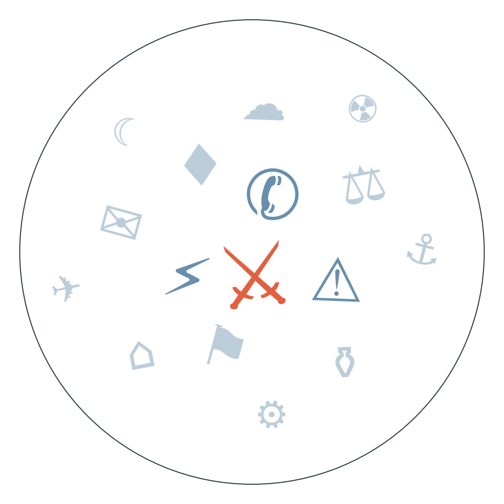

Ранковий бріф · огляд світової преси
США й Іран обмінялися прямими ударами вперше за місяць: американські сили вдарили по пускових установках на острові Ларак, а Іран, за версією його держмедіа, відповів по базах США "Рейн Хусейн" і "Аль-Азрак" у Йорданії. Пентагон офіційно участь досі не підтвердив, а Трамп пообіцяв "вдарити жорстко" у відповідь, водночас виключивши застосування ядерної зброї.
Росія вп'яту ніч поспіль атакувала Київ і область: щонайменше четверо загиблих, понад десять поранених, серед них діти. Це продовження хвилі, що почалась із удару по пансіонату в Милі на Київщині (38 загиблих), і показує, що заявлена Міноборони РФ "підготовка масованих ударів" по енергетиці вже реалізується практично щоночі.
На фінансовому саміті G20 у Блакитних горах США повернули Росію за стіл переговорів: міністр фінансів Сілуанов уперше з 2022 року особисто зустрівся з Бессентом, який водночас запевнив, що санкції лишаються чинними, доки не закінчиться війна. Європейські чиновники демонстративно виключили Сілуанова з групового фото — розкол усередині самого Заходу щодо того, як поводитися з Москвою, став видимим без слів.

Сюжет 1: обмін ударами США-Іран
Замовчують: точні втрати особового складу з обох сторін і офіційне підтвердження участі Пентагону в ударі по Ларак — цього не дає жодне джерело.
Чому розходяться: хорватське видання просто ретранслює найяскравішу цитату, бо не має власного кореспондента в регіоні; DW обирає рамку "відповіді", бо для німецької аудиторії важливо не виглядати виправдовуючи ескалацію; Al Jazeera тримає нейтральний хронікальний тон, щоб залишатись прийнятним і для проамериканської, і для проіранської частини аудиторії; The Hindu веде економічну лінію, бо Індія залежить від стабільності нафтових поставок і воліє говорити про наслідки для Тегерана, а не про військову ескалацію, в якій Делі не бере участі.
Сюжет 2: повінь у Гімалаях
Замовчують: точні дані про жертви і зниклих на тибетській стороні кордону — жодне з проаналізованих джерел їх не наводить.
Чому розходяться: австралійська преса реагує на консульський інтерес власних читачів; напівдержавне китайське Sixth Tone свідомо звужує кадр до прикордонної зони, щоб уникнути питань про масштаб лиха на території КНР; французьке видання вбудовує трагедію в глобальний кліматичний наратив, бо це відповідає редакційній лінії; гонконгський SCMP обирає безпечну людяну історію, що дозволяє висвітлити подію, не торкаючись політичної відповідальності за попередження про небезпеку.
5 вересня Мерц має назвати винних за дрон над Лейпцигом і оголосити санкції → 6 вересня вибори до ландтагу Саксонії-Ангальт, де опитування дають AfD перевагу над ХДС → веде до випробування довіри до федерального уряду напередодні можливого загострення внутрішньополітичної кризи.
серпень Трамп заявляє про нафтову угоду з Венесуелою, структура угоди й оператор не розкриті; тоді ж Мадуро публікує перші фото з американської в'язниці, помітно схудлий → 01.09 Трамп називає угоду "найбільшою нафтовою угодою в історії", тоді як болгарське Dnevnik описує її як "кошмар для інвесторів" через непрозору схему → веде до зростання невизначеності щодо реального контролю над венесуельською нафтою і подальшої долі Мадуро.
серпень Скупщина Сербії розглядає процедуру державного поховання Ратка Младича, Хорватія погрожує заблокувати переговорний розділ Сербії про вступ до ЄС → 01.09 американський конгресмен публічно порівнює державні почесті Младичу з тим, "ніби їх дають Гітлеру" → веде до посилення міжнародного тиску напередодні орієнтовної дати похорону 10 вересня.
Ціна газу в ЄС у серпні зросла до максимуму з кінця 2022 року — ф'ючерси піднялись до близько 840 доларів за тисячу кубометрів, на 18,5% за місяць.
Держборг центрального уряду Китаю перевищив 100 трильйонів юанів, співвідношення до ВВП зросло до 73,2% — за оцінкою Caixin.
ЄС призупинив імпорт м'яса з Бразилії через недотримання правил щодо антибіотиків.
Акції Shein впали більш як на 9% під час дебюту на Гонконгській біржі.
Поки якісна преса рахує ракети над Києвом і БПЛА над Ленінградською областю, Bild цього ранку живе гороскопами, вибухом голів "Ганзи" у третій лізі й попередженнями про сонячні бурі.
Daily Mail подає зустріч Моді з Путіним на ШОС як "незручний момент, коли Путіну незручно сказали рухатись від нескінченної війни до кінця війни" — акцент на приниженні, а не на дипломатичному змісті.
Швейцарський Blick розганяє деталі стрілянини в Аарау — ім'я жертви, характер поранень — тоді як поліція 48 годин мовчить і не називає підозрюваного; таблоїд заповнює вакуум здогадками там, де офіційних фактів ще немає.
П'ята поспіль ніч ударів по Києву виснажує протиповітряну оборону перед зимою — паралельно Зеленський провів кадрову зміну, звільнивши Камишіна з посади радника саме в момент, коли Київ готується до опалювального сезону.
Публічний заклик Моді до Путіна закінчити війну "заради людства" на саміті ШОС — сигнал, що навіть партнери Росії відчувають тиск дистанціюватися риторично, хоча Індія й далі купує російську нафту й, за офіційними даними Делі, втратила 51 із 227 завербованих у армію РФ громадян.
Зростання ціни газу в ЄС до максимуму з 2022 року підвищує вартість опалювального сезону і для України, енергосистема якої й так під ударами і залежить від імпорту та підтримки партнерів.
Тибетська сторона повені в Гімалаях лишається практично невидимою в цифрах: китайські видання (Sixth Tone, SCMP) обмежують кадр непальською територією і людяними історіями порятунку, уникаючи даних про власну територію — тема незручна для влади, яка не хоче визнавати масштаб стихійного лиха у себе.
Точна кількість жертв катастрофи порома біля Північного Кіпру досі розходиться між джерелами (6-8 загиблих або 17-23 зниклих) — жодне велике видання не звело цифри в одну версію, бо розслідування зачіпає одразу турецьку й кіпрську юрисдикції, і обидві сторони уникають остаточних заяв до його завершення.
Офіційне підтвердження Пентагону про удар США по Ларак відсутнє й сьогодні — цю тему великі американські редакції взагалі не винесли в топ, зосередившись натомість на відставці Дрісколла й рішенні Верховного суду щодо бальної зали Білого дому: історія витіснена внутрішньополітичними сюжетами США.
Середня впевненість. Заява південнокорейської розвідки про "ознаки" готовності до саміту США-КНДР може означати підготовку нового раунду переговорів Трамп-Кім найближчими тижнями. На чому ґрунтується: одне джерело — Chosun Ilbo з посиланням на НІС.
Низька впевненість. Зростання бажання Угорщини приєднатися до єврозони на тлі трьох поспіль знижень ставки може сигналізувати про зміну економічного курсу Орбана. На чому ґрунтується: один аналітичний матеріал китайського спостерігача Caixin.
Висока впевненість. Домовленість Косова про спільного президентського кандидата (див. "Пульс країн") після майже дворічного політичного глухого кута може розблокувати формування уряду найближчими тижнями. На чому ґрунтується: два незалежні джерела — словацька Aktuality й хорватський Index.hr.
Рахунок: 1 з 3 (базово 1 з 3) — референдум в Ісландії не справдився, дата похорону короля Норвегії справдилась достроково, спільна заява на ШОС щодо війни в Україні чи санкцій не прозвучала.
Наші:
Демократи Палати представників внесуть законопроект-протидію перейменуванню Lake Ontario на "Lake America" до 08.09.2026
Сербія проведе державний похорон Ратка Младича з військовими почестями попри протести правозахисників і критику ЄС до 10.09.2026
ФРС на засіданні FOMC 12.09.2026 підвищить ставку, попри те що це не є базовим сценарієм
Кажуть інші:
МЗС Пакистану (за переказом Caixin) — більше мусульманських країн виявляють намір приєднатися до спільної оборонної угоди; строк не вказано.
Дональд Трамп — переглядає позицію США щодо суверенітету над Фолклендськими островами; строк не вказано.
Базова лінія у прогнозах. Відсоток «базово» — це ймовірність події за інерцією, якщо ніхто нічого не робитиме й нічого не зміниться. Друге число — наша впевненість. Прогноз має сенс лише тоді, коли ці числа розходяться: збіг означає, що ми просто описали поточний стан.
Відсотки в карті уваги. Частка країни в денному обсязі зібраних матеріалів. Не показник важливості події, а показник того, скільки місця країна зайняла в новинному потоці за добу. Різкий стрибок частки зазвичай означає, що в країні щось відбувається.